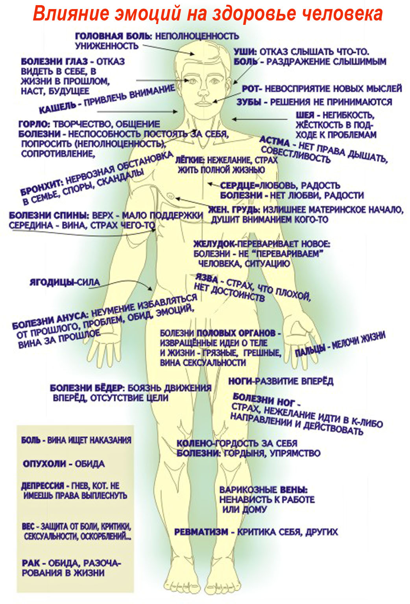
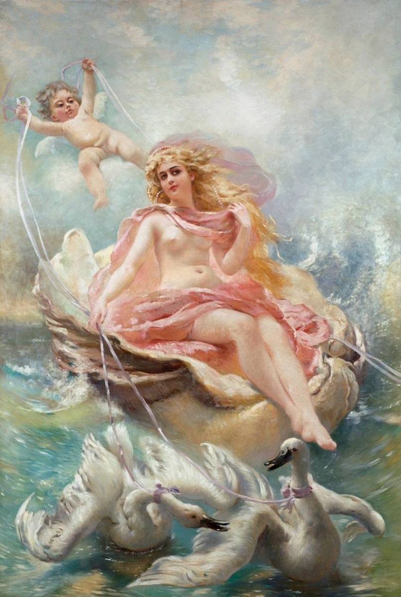
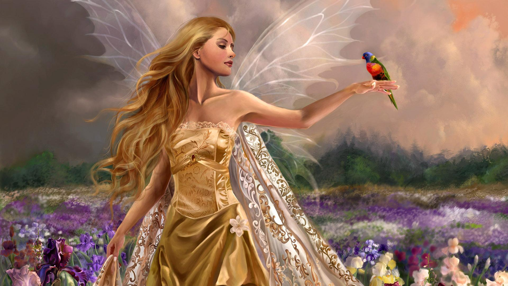

Наша жизнь как машина времени. Мы хотим быть богатыми, успешными, хотим иметь хорошую, счастливую семью. Для этого нам сегодня необходимо оглянуться назад, посмотреть и проанализировать наши действия, отношения и ситуации, в которых мы оказывались не один раз, и которые, как тяжелый якорь, задерживают нас от продвижения вперед.
Александрович С.
Когда обращаться к психоаналитику
Чаще всего людям нужна консультация психолога психоаналитика или психотерапия при решении таких проблем:
Возрастной кризис
Детско-родительские отношения
Депрессия, неврозы
Комплексы, обида, вина
Неуверенность в себе
Неудовлетворенность своей жизнью
Психосоматические проявления
Психическая травма, стресс
Потеря близкого человека, горе
Подростковые проблемы, трудности взросления
Ревность, измена, расставание
Страхи, тревожность
Семейные конфликты, ссоры
Трудности в общении
Чувство одиночества
Хроническая усталость
У каждого человека есть всегда какая-то ситуация или история которая его волнует и которой он не всегда может поделиться со своими близкими. Человек постоянно думает о ней, не находит выхода с создавшейся ситуации, становится более замкнутым, раздражительным, ухудшается настроение, начинает болеть, хотя видимых причин для заболевания нет. Может все-таки психоаналитик? Оценочная позиция психоаналитика нейтральна. Вы приходите за помощью, а не за советом. Рассказывая свою историю психоаналитику, проясняются многие детали о которых Вы может даже и не задумывались, или Вам страшно было себе в этом признаться и эта ситуация Вам доставляла дискомфорт, который влияет на ваше психологическое состояние. Это сложная работа, которая требует от человека, который обратился к психоаналитику активного участия. Человек начинает по другому смотреть на ситуации которые ему раньше приносили неприятности, он пересматривает свои отношения с близкими, родными и друзьями, лучше понимает себя и по другому относится к окружающим его людям и к себе. Повышается самооценка, улучшается настроение, налаживаются отношения. Проблем серьезных или не серьезных не бывает, если она Вас тревожит и Вы о ней постоянно думаете, это уже повод для обращения к психоаналитику.
Биография
Александрович Светлана Геннадьевна
практикующий психоаналитик
член Украинской Ассоциации Психоанализа
член Украинской Ассоциации Висцеральной Хиропрактики
Образование
2007 г. — Повышение квалификации: "Технология ведения деловых переговоров"
2009 г. — Повышение квалификации. Медицинский институт Украинская Ассоциация Народной Медицины: "Применение аромотерапии в практике лечебного массажа"
2009 г. — Повышение квалификации. Медицинский институт Украинская Ассоциация Народной Медицины: "Тайский массаж"
2009-2012 гг. — Институт Глубинной Психологии - практическая психология, психоанализ
2009 г. — Специализированный мастер-класс "Как правильно строить диалог"
2010 г. — Обучающий семинар "Техника психоанализа"
2010 г. — Тематическое усовершенствование по курсу "Психоанализ Дольто"
2012 г. — Волонтерская работа в городском социальном центре "Право на здоровье"
2013 г. — Волонтерская работа, психиатрическая клиника, детское отделение
2014 г. — Специализация по курсу "Старословянский массаж внутренних органов" (висцеральная хиропрактика)
2015 г. — Волонтерская работа, кризисный центр ИГП, военный госпиталь
2015 г. — Повышение квалификации "Основы теории и практики психоаналитической работы с супружеской парой"
2017 г. — Психодинамическая арт-терапия "Метаморфозы либидо"
2017 г. — Повышение квалификации "Психология реабилитации"
"Если кто-то ищет здоровья, спроси его сперва, готов ли он расстаться со всеми причинами своей болезни – только тогда ты сможешь ему помочь..."
Так что-же такое психосоматика? В психологическом словаре написано так:
"Психосоматика (греч. Psyche – душа, soma – тело) – направление в медицине и психологии, занимающееся изучением влияния психологических факторов на возникновение и последующую динамику соматических заболеваний".
Психосоматические заболевания - зто физические заболевания или нарушения, причиной возникновения которых, является эмоциональное напряжение.
Это могут быть конфликты, страдание, чувства агрессии, страха, которые не осознаются человеком, но остаются в его бессознательном.
Можно сказать, что психосоматические заболевания – это боль и страдания души, которые не нашли другого выхода, кроме как через тело, это рассказ души о себе, а чаще всего – ее крик.
В психологии часто акцентируют внимание на восьми источниках психосоматических заболеваний:
Первый источник – это внутренний конфликт, конфликт частей личности, сознательного и бессознательного в человеке, единоборство между которыми приводит к разрушительной "победе" одной из них. Например, при переедании, одна часть как бы говорит: "Я хочу себя утешить, убаюкать едой, чтобы забыть свои неприятности". Другая часть – "Немедленно прекрати есть, посмотри какая ты становишься уродливая!"
Второй источник – называется "условной выгодой". Это очень серьезная причина, потому что часто болезнь несет условную выгоду для пациента. Например, избавление от мигрени может "открыть глаза" на многие проблемы, которые мешает "видеть" головная боль, и тогда пациент окажется перед необходимостью их решения.
Третий источник – эффект внушения другим человеком. Часто, это слова, которые он слышал в детстве от отца или матери: "Дурочка, жадина, растяпа, неряха, тупица, у тебя все из рук валится... и т.д." Известно, что если ребенку это часто повторять, то дети начинают демонстрировать поведение, соответствующее внушенному, которое автоматически переходит во взрослую жизнь.
Четвертый источник – это "элементы органической речи". Например, слова "У меня болит за него сердце", "Я от этого с ума схожу" могут превратиться в реальные симптомы.
Пятый источник – попытка быть похожим на кого-то, какой-то идеал. Но, постоянно имитируя другого, человек отстраняется от своего тела. Живя как бы в "чужой шкуре", он начинает страдать от этого.
Шестой источник – самонаказание. Если человек совершает неблаговидный со своей точки зрения поступок, он иногда бессознательно подвергает себя наказанию. Например, ребенку внушали, что нужно уважать своих родителей и поступать так, как они считают нужным. Если же он решает поступить по-своему, то совершает "неблаговидный" поступок с точки зрения его воспитателей, и тогда появляется чувство вины, а вина ищет наказания.
Седьмой источник – эмоциональная реакция на реальные травмирующие события. Это может быть потеря близкого человека, перемена места жительства, потеря работы, развод, военные действия, революции и т.д.
Восьмой источник – наиболее глубокая причина – болезненный травматический опыт прошлого, чаще это эмоциональные травмы периода детства, последствия которых ярко проявляются во взрослой жизни.
Когда начинается болезнь?
Болезнь начинается в тот момент, когда человек достигает своего физического и эмоционального предела. Эти пределы индивидуальны для каждого человека. Время достижения этих пределов зависит от того, какой у человека запас энергии, или сколько раз он пережил одну и ту же внутреннюю боль.

ГОЛОВА. Самая социальная часть тела. Мы даже забываем, что это - тоже тело, как руки и ноги. Если болит голова, стоит спросить себя, за что мы собой недовольны, в чем чувствуем себя неполноценными. Затяжные мигрени бывают у тех, кто ставит перед собой только завышенные планки, требует от себя полной безупречности во всем и всегда. Иногда голова болит, чтобы обратить на себя внимание, что значит вы делаете что-то такое, к чему не привык ваш центр контроля, он бунтует.
Голова представляет нас самих. Это то, что мы показываем миру. Нас узнают по голове. Когда что-то не в порядке с головой, это значит, что-то не в порядке с нами.
ВОЛОСЫ представляют силу. Когда нам очень страшно, мы создаем "стальной ремень", который обычно начинается в плечевых мускулах, а потом идет к голове, а иногда к глазам. Волосы прорастают через волосяной мешочек. Когда мы создаем большое напряжение в черепной коробке, эти мешочки автоматически закрываются, и волосы начинают отмирать и выпадать. Если напряжение постоянно продолжается и череп не расслаблен, волосы перестают расти. Результат — лысина. Женщины начали лысеть с тех пор, как они вошли в "деловой" мужской мир. Мы, конечно, это далеко не всегда замечаем, так как многие парики выглядят совершенно натурально.
УШИ представляют собой символ способности слушать и слышать. Когда у человека проблемы с ушами, это значит, что в его жизни происходит нечто такое, что он наотрез отказывается слышать. Боль в ушах — это пример наивысшего раздражения в отношении того, что вы слышите. У детей часто бывают боли в ушах. Им бедным приходится выслушивать дома все то, что им не хочется слышать. Выражать свой гнев ребенку запрещено, а так как он практически не в силах что-либо изменить, то эта невозможность и приводит к боли в ушах.
Глухота представляет собой долгое — возможно продолжающееся всю жизнь — нежелание кого-либо слушать. Обратите внимание:
когда мы видим одного Партнера со слуховым аппаратом, другой говорит без остановки...
ГЛАЗА говорят о возможности видеть. Когда у вас проблемы с глазами, это обычно означает, что мы отказываемся что-либо видеть — или в нас самих, или в своей жизни. Когда я вижу маленьких детей в очках, я знаю: что-то не в порядке дома, они в прямом смысле отказываются на что-то смотреть. Если они не в силах изменить домашнюю ситуацию, то они буквально рассеивают свое зрение с тем, чтобы глаза потеряли способность видеть ясно.
ГОЛОВНЫЕ БОЛИ происходят, когда мы себя чувствуем неполноценными. В следующий раз, когда у вас заболит голова, остановитесь на минутку и спросите себя, где вы себя чувствуете униженными и почему. Простите себя, пусть это чувство уйдет, и ваша головная боль исчезнет сама собой.
Мигрени создаются людьми, которые хотят быть совершенными, а также теми, у кого накопилось много раздражения в этой жизни.
Шея и горло очень интересны.
ШЕЯ — это способность к гибкости мышления, способность увидеть другую сторону вопроса и понять точку зрения другого человека. Когда у нас проблемы с шеей, это значит, что мы упрямимся и отказываемся быть более гибкими.
ГОРЛО представляет нашу способность постоять за себя, попросить того, чего мы хотим. Проблемы с горлом возникают от чувства, что мы "не имеем права", и от ощущения собственной неполноценности.
БОЛЬНОЕ ГОРЛО — это всегда раздражение. Если ему сопутствует простуда то, помимо этого, еще и замешательство. Ларингит обычно означает то, что мы так злы, буквально не можем говорить. Горло, кроме того, представляет собой участок организма, где сосредоточена вся наша творческая энергия. Болезни, связанные с гландами и щитовидкой, свидетельствуют поэтому о том, что в творческом смысле вам не удалось сделать то, что бы вы хотели. Именно в области горла прежде всего происходят наши перемены. Когда мы сопротивляемся переменам, у нас чаще всего появляются проблемы с горлом. Обратите внимание на то, как мы иногда начинаем кашлять ни с того, ни с сего. Или кто-нибудь другой начинает кашлять. Что именно говорится в эту минуту? На что мы реагируем? Может быть это упрямство, сопротивление или свидетельство того, что мы в процессе перемены?
СПИНА представляет собой систему поддержки. Проблемы со спиной указывают на то, что вы чувствуете недостаточную поддержку. Слишком часто мы думаем, что нас поддерживает семья и друзья. В действительности же, это поддержка Вселенной и самой Жизни.
Проблемы с верхней частью спины — сигнал недостаточной эмоциональной поддержки: "Мой муж (любовник, друг) не понимают и не поддерживают меня". Средняя часть спины имеет прямое отношение к чувству вины. Боитесь ли вы того, что у вас сзади, или прячете что-то там? Нет ли у вас чувства, что кто-то ударил вас в спину?
Беспокоитесь ли вы все время о своих деньгах? Какова у вас денежная ситуация? Она может быть источником проблем с нижней частью спины.
ЛЁГКИЕ — это способность брать и давать жизнь. Проблемы с легкими обычно возникают из-за нашего нежелания или страха жить полной жизнью, или от того, что мы считаем, что у нас нет права жить в полную силу. Те, кто много курят, обычно отрицают жизнь. Они скрывают за маской чувство своей неполноценности.
ГРУДЬ — олицетворение материнства. Когда возникают проблемы с молочными железами, это значит, что мы буквально душим своим вниманием другого человека, вещь или ситуацию. Если имеет место рак груди, это дополнительно еще и накопленная обида или злоба. Освободитесь от страха и знайте, что в каждом еще из нас активен и действует разум Вселенной.
СЕРДЦЕ, конечно, символизирует любовь, а кровь — радость. Когда у нас в жизни нет любви и радости, то сердце буквально сжимается и становится холодным. В результате кровь начинает течь медленнее, и мы постепенно идем к анемии, склерозу сосудов, сердечным приступам (инфаркту). Мы настолько иногда запутываемся в жизненных драмах, которые сами себе создаем, что совсем не замечаем радости, которая нас окружает. Золотое сердце, холодное сердце, черное сердце, любящее сердце — а какое у вас сердце?
ЖЕЛУДОК перерабатывает, переваривает все новые идеи и ситуации. А что или кого Вы не можете "переварить"? Когда у нас проблемы с желудком, это обычно означает, что мы не знаем, как ассимилировать новую жизненную ситуацию. Нам страшно. Многие из нас помнят время, когда пассажирские самолеты только начали летать. Для нас была новостью идея полета в небо, и нам было чрезвычайно трудно ассимилировать ее в нашем мозгу. На каждом сиденье имелись пакеты, которые выручали нас, если нам становилось плохо. И мы почти всегда ими пользовались. Сейчас же, много лет спустя, хотя пакеты предоставляются по-прежнему, ими никто не пользуется. Мы, наконец, ассимилировали идею полета.
ЯЗВА ЖЕЛУДКА — более чем просто страх, чувство, что мы недостаточно хороши или полноценны. Мы боимся, что недостаточно хороши для своих родителей, боссов, учителей и т. д. Мы буквально не можем переварить того, что мы из себя представляем. Мы то и дело стараемся угодить другим. Неважно, какой пост вы занимаете на работе, у вас может совершенно отсутствовать разрешение такой проблемы — любовь. Люди, которые любят и уважают себя, не имеют язв. Будьте же нежной и внимательной к ребенку внутри вас (помните наше упражнение?) и всегда поддерживайте и уважайте его.
КАМНИ В ЖЕЛЧНОМ РУЗЫРЕ символизируют накопленные горькие мысли, а также гордость, которая вам мешает избавиться от них. Попробуйте следующее упражнение: говорите себе постоянно: "Я с радостью отпускаю свое прошлое. Жизнь прекрасна и я тоже".
ПРОБЛЕМЫ С МОЧЕВЫМ ПУЗЫРЕМ, ЗАДНИМ ПРОХОДОМ, ПОЛОВЫМИ ОРГАНАМИ происходят из-за извращенных идей о наших телах и функциях, которые они выполняют. Каждый орган нашего тела — великолепное отражение самой жизни. Мы же не думаем, что жизнь грязная и грешная? Почему же мы такое думаем о половых органах? Задний проход так же прекрасен, как и уши. Без заднего прохода мы были бы не в состоянии освободиться от шлаков и погибли бы очень быстро. Каждая часть нашего тела и каждая функция, которую она выполняет, совершенно нормальна, естественна и прекрасна. Наши половые органы были созданы для удовольствия. Отрицать этот факт — значит создавать боль и наказание. Секс прекрасен, и для нас совершенно нормально заниматься сексом, так же, как есть и пить. На минуту представьте себе бесконечность Вселенной. Нам такое даже трудно представить. А внутри Вселенной много галактик. Вокруг Солнца вращается много планет, среди которых — Земля. И знаете, мне невероятно трудно представить, что та Сила, которая создала всю Вселенную, — это всего лишь старик, который сидит себе на облаках и... наблюдает за нашими половыми органами! И все-таки именно этому научили многих из нас, когда мы были детьми. Для нас очень важно избавиться от этих глупостей. Однако не поймите меня неправильно. Я ни в коем случае не проповедую свободный секс с кем попало. Просто многие из наших правил давно устарели, именно поэтому многие их нарушают и становятся лицемерами. Когда мы удалим вину сексуальности из нашего сознания и научим людей любить и уважать себя, и, следовательно, других, только тогда они автоматически станут жить во имя высшего — Добра и Радости. У нас у всех так много проблем с сексуальностью из-за нашей самоненависти и самоотвращения. Поэтому мы плохо относимся и к себе, и к другим. Недостаточно давать в школах сексуальное образование. Нам необходимо на более глубоком уровне разрешить детям понять, что их тела, половые органы и сексуальность созданы для радости.
ЯИЧНИКИ представляют собой творческую энергию. Проблемы с ними — невыраженные творческие способности.
НОГИ несут нас по жизни. Проблемы с ногами свидетельствуют о страхе продвигаться вперед или нежелание двигаться в определенном направлении. Ноги наши нас везут, тащат, волочат, а на них сидят большие, жирные, полные детских обид, бедра. Нежелание действовать часто проявляется в серьезных проблемах с ногами. Варикозные вены — это или дом, или работа, которые вы ненавидите.
НЕСЧАСТНЫЕ СЛУЧАИ совсем не "случаи". Как и все остальное в нашей жизни, мы их создаем. Вовсе не надо себе говорить: "Хочу, чтобы со мной произошел несчастный случай". Мы просто создаем систему умственных убеждений, которая может привлечь несчастный случай. С некоторыми из нас постоянно случается что-то, а другие проживают жизнь без единой царапины.
Несчастные случаи — это выражение раздражения и обиды. Они являются выражением безысходности и полной несвободы человека заявить о своих чувствах.
Несчастные случаи — это также восстание против представителя власти. Мы так злимся, что хотим кого-нибудь ударить, а вместо этого ударяем самих себя. Когда мы злимся на самих себя, чувствуем себя виноватыми, когда мы буквально ищем себе наказание, оно приходит в форме несчастного случая. На первый взгляд мы лишь невинные жертвы несчастного случая. Несчастный случай позволяет нам обратиться за помощью и сочувствием к другим. Нам омывают раны и ухаживают за нами, часто мы вынуждены лежать в постели, иногда в течение долгого времени. И мы стонем от боли. С помощью боли наше тело подсказывает нам, над чем в жизни нам нужно еще поработать. Размер боли указывает, насколько жестоко мы хотели наказать себя.
РЕВМАТИЗМ — болезнь, приобретенная от постоянной критики себя и других. Люди с ревматизмом обычно привлекают к себе людей, которые их постоянно критикуют. Это происходит из-за их собственного убеждения, что они должны критиковать других. На них лежит проклятие — это их желание постоянно быть "совершенством" с любыми людьми, в любой ситуации. Их ноша поистине невыносима.
АСТМА. Человеку с астмой кажется, что у него нет права дышать самому. Дети-астматики — это, как правило, дети с высокоразвитой совестью. Они за все принимают вину на себя. Иногда им помогает перемена места жительства, особенно если вся семья не едет с ними. Обычно дети-астматики выздоравливают. Этому способствует школа, новые жизненные ситуации, брак. Однако позже в жизни часто возникает ситуация, когда приступ повторяется, как будто кто-то нажал кнопку.
РАК — болезнь, вызванная глубокой накопленной обидой, которая в буквальном смысле начинает поедать тело. В детстве происходит нечто, подрывающее нашу веру в жизнь. Этот случай никогда не забывается, и человек живет с чувством огромной жалости к себе. Ему трудно порой иметь долгие, серьезные взаимоотношения. Жизнь для такого человека состоит из бесконечных разочарований. Чувство безысходности и безнадежности преобладает в его сознании, ему легко винить других за свои проблемы. Люди, страдающие раком, очень самокритичны. Как я убедилась на собственном опыте, приобретенное умение любить себя и принимать себя такой, какая ты есть, излечивает рак.
ИЗЛИШНИЙ ВЕС — не что иное, как нужда в защите. Мы ищем защиту от боли, критики сексуальности, оскорблений и т. д. Обширный выбор, не правда ли? Я никогда не была толстой, однако на собственном опыте убедилась, что когда я себя чувствую неуверенно и вообще неважно, я автоматически толстею на несколько килограмм. Когда угроза исчезает, излишек веса исчезает тоже. Бороться с миром — пустая трата энергии и времени. Как только вы прекращаете сопротивляться, ваш вес тут же нормализуется. Доверие к себе, к самому процессу жизни, воздержание от отрицательных мыслей — вот способы похудеть.
БОЛЬ любого происхождения, по моему мнению, — свидетельство чувства вины. А вина всегда ищет наказания, наказание же, в свою очередь, создает боль. Хроническая боль происходит от хронического чувства вины, так глубоко захороненного в нас, что мы часто о ней даже не знаем. Вина — бесполезное чувство. Это чувство никогда никому не помогает, оно же не в состоянии изменить ситуацию. Так что выпустите себя из тюрьмы.
ОПЕРАЦИЯ (любая). Вмешательство хирурга необходимо, например, при травмах рук и ног, с тем, чтобы человек мог сконцентрировать свое внимание на выздоровлении и на том, чтобы это больше не повторилось. В медицине сегодня много прекрасных врачей, которые полностью посвятили себя оказанию помощи людям. Все больше и больше врачей начинают лечить, применяя холестические методы. И все же большинство наших медиков не хотят иметь дело с причинами болезни, а лечат лишь симптомы и следствия. Они это делают двумя способами: либо отравляют лекарствами, либо режут. Хирурги режут, и если вы обратитесь к хирургу, он, конечно, будет рекомендовать операцию. Если у вас нет выбора, приготовьтесь, пожалуйста, к ней, с тем, чтобы вы быстро и без осложнений выздоровели... После операции слушайте все время музыку, которую вы любите, и говорите постоянно самой себе: "Я быстро выздоравливаю. С каждым днем я чувствую себя лучше и лучше".
ОПУХОЛИ — ложные наросты. Устрица берет малюсенькую песчинку и строит вокруг нее твердую и блестящую оболочку, с тем, чтобы защитить себя. Мы зовем песчинку жемчужиной и восхищаемся ее красотой. Мы как устрица, берем старую обиду и носимся с ней, пока она не перейдет в опухоль. Я называю это "прокручиванием старой пленки", я убеждена что опухоли у женщин в матке, яичниках и т. д. от того, что они берут эмоциональную боль, происшедшую в результате удара по их женственности и носятся с ней всю жизнь до возникновения опухоли... Если ваши взаимоотношения с кем-то заканчиваются, это совсем не значит, что с вами все в порядке, и это совсем не доказывает, чего мы в действительности стоим. Дело совсем не в том, что с вами происходит в этой жизни, а в том, как мы на это реагируем. Мы все без исключения несем 100-процентную ответственность за все, что с нами происходит.
— Лиз Бурбо, Луиза Хей
Искусство Быть Женщиной
"Женщина – это гибкое и утонченное создание. В ней, собран потрясающий многогранный мир страстей, эмоций, мир не сочетаемых чувств и настроений, понять которые довольно сложно. Узнать свои бессознательные желания, иметь возможность заявлять о себе, быть успешной, любящей и любимой - это залог, как психического здоровья, так и эстетической красоты."
Искусство - это всегда творчество.
Когда мы смотрим на художественное произведение или картину, мы по своим чувствам и ощущениям понимаем, нравится нам это произведение или нет, какой образ, форма, цветовая гамма заключена в ней. Хотя художник использует в своей работе разные оттенки, темные и светлые цвета и тона. Мы понимаем, что для нас это гармонично и комфортно и получаем от этого эстетическое удовольствие и наслаждение.
И мне бы хотелось сравнить женщину и ее искусство быть женщиной с палитрой где смешиваются все краски. Это ее сила и слабость, твердость убеждений и мягкость, терпение и вспыльчивость, гордость и податливость.
Все эти качества заключены в женщине, только ей необходимо чувствовать себя и в нужное время использовать все свои плохие и хорошие качества.
А это уже искусство. Женщина – это гибкое и многогранное создание.
Хотя эти понятия и кажутся противоположными, но может в этой противоположности и кроется секрет истинной женственности, и того самого искусства быть женщиной.
Уже с самого детства маленькая девочка понимает, что к ней относятся как-то по особенному, у нее есть уже свои секреты, она хочет быть похожей на маму и пытается понравиться своему папе, чувствует свой потенциал которым она пользуется затем во взрослой жизни.
В нас женщинах, собран потрясающий многогранный мир страстей и эмоций, мир не сочетаемых чувств и настроений, понять которые мы сами не всегда можем.
Но раз мы задумываемся над тем, что такое искусство - быть женщиной, значит мы уже об этом знаем и пользуемся этим, может только не всегда это осознаем.
В жизни, считают психологи, мы должны обладать целым набором ролей, чтобы прослыть верным другом, обольстительной и сексуальной женщиной, умелой женой, мамой и хозяйкой, надежным тылом и вдохновительницей для своего мужчины.
И все эти социальные роли соответствуют следующим внутренним ролям:
ЖЕНА/МАТЬ – принимает семя и дает мужчине возможность продолжить род. Происходит интеграция через постижение самого глубокого смысла неразрывного единства: жена = женщина. Здесь образуется точка слияния внутренних структур жены и матери. Созидание нового, новой жизни.

АМАЗОНКА – соперничает с мужчиной, провоцирует его, проверяет силу. Она самодостаточна, живет в сообществе себе подобных. Мужчины нужны здесь только лишь для продолжения рода.
ГЕЙША – посвящает мужчину в тайну близости с женщиной. Гейша принимает, любит и уважает свое тело, умеет формировать его и управлять им в полном смысле слова. Это та ступень развития, когда мужчина видит в женщине именно женщину, а женщина уже владеет сокровищем эротической и эстетической женской силы. Ее целебные свойства начинают проявлять в мужчине наиболее романтические из его устремлений. Гейша, ощущая себя женщиной, умеет создать для мужчины ту духовную питающую среду, где он особенно полно чувствует себя мужчиной. Она знает его сильные и слабые стороны, знает, какой бальзам пролить на его душевные раны.
КОРОЛЕВА – обустраивает среду, распределяет функции и обязанности в семье, социуме, заботиться о всех. У нее глубокое чувство собственного достоинства.
ФЕЯ – оберегает психический мир мужчины, вдохновляет, исцеляет, помогает, одаривает. Ее источник энергии не иссякаем, он самопополняется.

ВЕДЬМА – хранит сакральную информацию и дозировано делится ей. Она заигрывает, флиртует с мужчинами, но пока не подпускает их близко. Эта роль соответствует подростковому возрасту. Именно тогда она и инициируется, пробуждается в женщине.
БОГИНЯ – помогает мужчине в процессе созидания. Это высшее предназначение женской энергии.
То есть, получается, что те женщины, которые говорят о том, что они замечательные хозяйки и мамы, но им изменяют мужья, не имеют в своем арсенале ролей соблазнительных, сексуальных женщин, вдохновительниц.
А те, кто уже долгое время не может получить предложение "руки и сердца" - попросту не имеют в своем арсенале активных ролей хозяйки, жены, мамы.
Конечно, каждая женщина – это индивидуальность.
И для этого, необходимо понять, узнать себя, осознать все свои действия, поступки и разобраться в себе с помощью аналитика.
Любовь..
"Любовь в своей активной и пассивной формах, когда в первом случае любят, а во втором — позволяют себя любить, а также в своем кратковременном варианте — влюбленности, и варианте длительном — страстной любви, занимает привилигированное положение в азбуке страстей…"
Как показывает обыденная жизнь и психотерапевтическая практика, люди не становятся счастливыми от секса и порнографии. Современные молодые люди живут раскрепощенно, с легкостью меняя одного полового партнера за другим. Их практически не беспокоит чувство вины, досаждавшее их родителям и представителям так называемого скептического поколения. В данном случае прогресс в деле освобождения от прежних сексуальных табу очевиден.
Однако при ближайшем знакомстве с типом прогрессивно мыслящего человека, для которого нет ничего невозможного, начиная частой сменой половых партнеров и заканчивая групповым сексом, приходишь к другим выводам. Зачастую такой человек не способен на любовь, которую он в то же время постоянно ищет и не находит. Таким образом, он никогда сам не испытывал чувства любви и не ведает, что это такое. В отношении чувств подобный человек ощущает себя опустошенным. Обладая функциональной «генитальной потенцией», он является «эмоциональным импотентом», у которого полностью блокированы чувства, имеющие отношение к любви и страстям. Каждая новая связь, на которую он в очередной раз возлагает свои надежды, его разочаровывает. Вспомогательные средства, например наркотики, которые он использует для того, чтобы заполнить невыносимый вакуум чувств, приносят лишь временное облегчение. Этот самообман неминуемо раскрывается, и тогда безжалостная реальность душевной пустоты может довести до отчаяния.
В Песне Песней Соломона есть такие слова: «Ласки твои лучше вина <...> Я изнемогаю от любви <...> Левая рука его у меня под головою, а правая ласкает меня <...> На ложе моем ночью искала я того, которого любит душа моя <...> Души во мне не стало, когда он говорил <...> Крепка, как смерть, любовь; люта, как преисподняя, ревность <...> Стрелы ее — стрелы огненные; она пламень весьма сильный. Большие воды не могут потушить любви, реки не зальют ее <...> Если бы кто давал все богатство дома своего за любовь, то он был бы отвергнут с презрением». В этих строках страсть выражена непосредственно. Здесь нет и тени пренебрежения или пуританской морали. Все чисто и непорочно, как в первый день творения; перед нами великолепный образец несокрушимой, незамутненной, необезображенной любви.
Сравнятся ли с такой любовью чувства Казановы, величайшего ловеласа всех времен? В своих мемуарах он писал: «Ничему не обязан я так, как любви». Он без смущения описывал пикантные подробности своих многочисленных похождений. Однако действительно ли он любил женщин, которых желал? Действительно ли ощущал он в экстазе обольщения высочайшее блаженство? С точки зрения современной глубинной психологии Казанова — это несомненно сексуально одержимый, но, в принципе, неспособный на любовь человек, принадлежащий к тому распространенному сейчас типу молодых людей, который характеризует постоянная смена половых партнеров, что объясняется отсутствием душевных сил, необходимых для длительных отношений. Элементы негативной тенденции кроются в стойком желании отвергать одну женщину в угоду другой. Не обнаруживается ли здесь скрытое женоненавистничество? Подобным же образом ведут себя и сексуально одержимые женщины, часто меняющие мужчин. В основе их действий также лежит неспособность любить по-настоящему.
Возникает вопрос, почему именно страстная любовь столь редко бывает счастливой не только в романах и драмах — вспомним хотя бы роковое заблуждение, погубившее Ромео и Джульетту, смерть Тристана и Изольды, — но и в жизни?
Воззрения современной психологии на любовь
Современная психология рассматривает любовь как уравнение с тремя неизвестными: интимностью, сексуальностью и ответственностью. Роберт Дж. Стернберг (1988) прекрасно продемонстрировал несколько принципов, действующих в рамках треугольника интимности, страсти и ответственности, в соответствии с которыми можно определить типологическую принадлежность любви:
1. Крайне выраженная интимность, душевное расположение, при отсутствии сексуальности и ответственности.
2. Крайне выраженная страстная любовь, когда индивид, минуя межличностные отношения, попадает в зависимость от другого человека при наличии сексуальности и отсутствии ответственности.
3. Крайне выраженная абсолютная ответственность, лишенная сексуальности и интимности.
Для того чтобы убедиться в практическом значении данных экстремальных формулировок, следует рассмотреть следующие двойные комбинации трех основных характеристик:
— связь сексуальности и интимности, существующая при романтической любви, но подразумевающая любовь страстную.
— связь интимности и ответственности в рамках товарищеской или партнерской любви, из которой исключена сексуальность.
— совершенная любовь, при которой три ее компонента, словно зрелый плод, находятся в состоянии равновесия, именуемого Стернбергом «Balanced Triang1е»(1988), сбалансированным треугольником, и любовь после фазы своего развития балансирует между интимностью, сексуальностью и ответственностью.
Психоаналитические воззрения на любовь
1. Бессознательная побудительная сила любви — половое влечение, энергия которого, либидо, проистекает из физиологического источника и любой ценой стремится к своей цели, удовлетворению. Для достижения данной цели необходим объект; это может быть мастурбация, самоудовлетворение или половые контакты с другими людьми гетеросексуального или гомосексуального рода. Разумеется, такая энергия связана с внешними возбудителями, к которым можно причислить привлекательное лицо, определенные части тела, изображения или фантазии.
2. Любовь — это в большей или меньшей степени попытка наверстать другую любовь, упущенную в детстве; это мнение полностью согласуется с психоаналитической теорией травмы. Травма в данном случае носит душевный характер и возникает как результат оскорбительного действия, от которого индивид не мог защититься либо по причине чрезмерности травматического обстоятельства либо из-за собственной слабости на момент происшествия. В качестве травматических обстоятельств могут выступать такие действия, наносящие непосредственный ущерб, как сексуальные домогательства взрослых или жестокое обращение с ребенком. Значительное место среди травматических обстоятельств занимают действия, ущерб от которых носит опосредованный характер: недостаток заботы, отсутствие уважения, дефицит общения, небрежность, равнодушие, отсутствие заинтересованности. В первом случае возникает травматический опыт, сопровождаемый стимуляцией аффектов, обуславливающей в дальнейшем проблемы, связанные с невозможностью распутать клубок травм, а также сопутствующие этому гнев, ненависть, враждебность. Во втором случае речь идет об опыте недостаточной любви, недостаточной заботы, сопровождаемом угнетением аффектов и обуславливающем чувство дефицита, ощущения неполноценности собственной личности, внутренней опустошенности и тоски.
Разумеется, черты отношений матери и ребенка существенно обуславливают типологическую принадлежность любви взрослого человека. Если будучи детьми, мы много получали, то, повзрослев, мы сможем столько же дать. Если детство было проникнуто фрустрацией, то в дальнейшем такой человек будет фрустрировать своего партнера. Индивид, который был способен на эмоциональную отдачу, на ребяческую, но действенную любовь в детском возрасте, повзрослев, сможет любить активно даже в том случае, если предмет его любви не отвечает ему взаимностью. Хороший опыт в более или менее удовлетворительных отношениях между матерью и ребенком гарантирует будущую способность давать и принимать. Неудовлетворительные отношения матери и ребенка, чрезмерная травматизация или дефицит любви, напротив, ведут к тому, что индивид, хочет он того или нет, привносит элементы своей травмы или неудовлетворенности в существующие любовные отношения. Прежние разочарования, обиды и страдания начинают сказываться на нынешней любви. В случае невроза на первый план выступают фантазии, призванные возместить индивиду утаенную от него в детстве любовь; детскую травму пытаются компенсировать за счет партнера мечтами, симптомами и повторением. При перверсиях такую роль выполняет, к примеру, фетиш, компенсирующий недостаток любви. Садомазохистские действия представляют собой «эротическую форму ненависти» (J. Stoller), при которой «любовь состоит на службе у агрессии» (Otto F. Kernberg), и являются инсценировкой непреодоленных детских впечатлений. Алкоголизм и наркотики выступают в качестве средств, сулящих заполнение внутренних пустот; преступление дает возможность попросту украсть или в крайнем случае насильственно заполучить то, в чем человеку было отказано и в чем он очень нуждался.
3. Любовь является бессознательным повторением непреодоленных конфликтов, идущих из прошлого. К числу последних следует отнести как вышеупомянутые доэдиповы конфликты, связанные с отношениями матери и ребенка, так и типичные эдиповы конфликты, сопутствующие отношениям ребенка, матери и отца. Ребенок ощущает себя «третьим лишним» (Freud, 1910), исключенным из жизни влюбленной пары, переживает нарцистическую обиду, завидует имущим, ревнует к тому, кто отнимает у него одного из родителей. Человек, недостаточно преодолевший такой печальный опыт, бессознательно повторяет его во взрослых отношениях. При этом в течение жизни он постоянно меняет роли: если в детстве его обманывали, то в дальнейшем он может превратиться в обманщика. Человек, ощущавший в детстве свою слабость, может захотеть стать сильнейшим. Так жертва оборачивается палачом, и тогда месть бывает сладостна. Некоторые события могут влиять на смену ориентации: например, мужчина, которого покинула возлюбленная, предпочтя ему другого человека, может поначалу ревновать ее к сопернику и злиться на последнего, но затем заинтересоваться тем, чем занимается он с этой женщиной, а не тем, что ощущает она. Данный гомосексуальный компонент выявляет гомосексуальные черты любви в целом. То же самое относится к женщинам. Людям приходится на протяжении всей жизни сталкиваться с непреодоленными конфликтами, обсуждать их в разговорах с друзьями, размышлять о них в одиночестве. Так или иначе, речь идет о непреодоленных детских конфликтах, которые снова и снова толкают нас на любовь.
4. Любовь — это всегда удовлетворение неизбежного желания самоутвердиться. Следовательно, любовь, главным образом, посвящена самому любящему, а не предмету любви. Человек любит не другого человека, а себя, подобно Нарциссу, воспылавшему страстью к своему отражению. Получается, что любовь аналогична самовлюбленности, а вера в то, что мы любим другого, не что иное, как иллюзия. В любви мы желаем лишь самоутвердиться, поднять собственную цену в своих глазах. Другой человек — лишь средство для достижения этой цели. В своей книге «Анализ самости» (Н. Kohut, «The Analysis of the Self», 1971), выпущенной на немецком языке под названием «Нарцистизм» в 1973 году, Хайнц Кохут продемонстрировал, как индивид идеализирует свою личность благодаря «зеркальному переносу» на другого, сливаясь с ним или пытаясь найти и обнаруживая в нем свое «alter ego». Ребенок желает увидеть «блеск в глазах матери», указывающий на то, что он ей не безразличен; повзрослев, человек ищет волшебство и шарм в своем возлюбленном, который дает ему понять, что любит только его и никого другого.
— Петер Куттер
Влюбленность..
"Влюбленность отличается от любви, но, как правило, последняя начинается с того, что человек влюбляется. В период влюбленности предмет ее кажется недостижимым и прекрасным. Нас чарует его облик, привлекает его обаяние, нами овладевает тоска. Мы хотим всегда быть с ним, делить с ним все. Наше воображение переполнено его образами до такой степени, что мы перестаем замечать себя…"
Сонеты Шекспира, лирика Петрарки и Данте, баллады миннезингеров и бесчисленные стихотворения щеголяют друг перед другом похвалами, воздаваемыми чувству бессмертной влюбленности. Тем не менее рано или поздно эта «великая» любовь завершается разочарованием, которое закономерно уже только потому, что мы чрезмерно идеализируем возлюбленного. Испытывая счастье «цветущей влюбленности», человек рисует в своем воображении красочный и прекрасный образ, увеличивая пропасть между мечтой и реальностью, хотя сам он этого долго не замечает. И только проанализировав реальное поведение возлюбленного, которое не соответствует нашему идеальному о нем представлению, мы медленно начинаем спускаться с небес на землю, испытывая болезненную опустошенность, обиду, разочарование и печаль. Таким романтическим мечтам, иллюзиям и псевдолюбви целиком посвящена книга Стена Й. Катца и Эммы Э. Лин «На седьмом небе разреженный воздух».
Идеализация возлюбленного тесно связана с детской идеализацией родителей, когда отец и мать представляются ребенку недостижимыми, совершенными, восхитительными существами. Процесс, обратный идеализации, разочарование, достигает особенно значительных масштабов, когда любимая мать не отвечает ребенку взаимностью. Всякому из нас знакомо чувство отвергнутой любви и связанная с этим боль разлуки, печаль, одиночество. Однако если нам удастся сохранить об этой любви только добрые воспоминания, то данный опыт обогатит нас. Если же оно пробуждает в нас дремавшие до того чувства, то выигрыш от данного происшествия несравненно больше, чем ощущение конкретной утраты.
Однако даже если отношения продолжаются, разочарование неизбежно. Влюбленность превращается в любовь, которая ни в коем случае не лишена страстности. Для этого превращения существуют две базовые предпосылки: во-первых, не следует бояться ответственности, во-вторых, потеря определенной свободы и своеволия не должна превышать выгоды от партнерства.
Что необходимо преодолеть, чтобы не страшиться любви?
1. Ответ таков: необходимо хотя бы в какой-то мере преодолеть младенческую травматизацию, чтобы она не могла бессознательно преследовать индивида со всеми вытекающими из такого преследования последствиями для нынешних отношений. В первую очередь речь идет о непреодоленных конфликтах доэдиповой фазы, берущих начало в отношениях матери и ребенка. Сепарация, или отделение, от матери может оказаться непреодоленной утратой, которая будет препятствовать индивидуации в контексте автономного существования и самостоятельности. Вместо этого может сохраниться зависимость от других людей, при отсутствии которых индивид чувствует себя несчастным и требует, чтобы эти люди находились всегда подле него. Это находит свое наиболее яркое выражение в популярных песнях. Во вторую очередь речь идет о типичных эдиповых конфликтах, стереотипные реакции которых индивид фиксирует и бессознательно воспроизводит в процессе навязчивого повторения (Freud, 1920), перенося на плоскость треугольника отношений, даже при условии, что сам индивид страдает от этого и на сознательном уровне желал бы освободиться от подобных стереотипов.
2. Сексуальность и физиологические аспекты в целом должны быть интегрированы в любовь. Разумеется, существует сексуальность без любви, точно так же, как любовь без сексуальности. Однако я веду речь преимущественно о любви, которая первоначально возникает как результат растущего доверия и вторично включает в себя сексуальность в качестве «премиального наслаждения» (Freud, 1925), которое приносит равное удовольствие обоим индивидам, отвечая их пожеланиям. Для этого следует в рамках последовательного анализа не только повторить дурной опыт, приобретенный в ранних отношениях с матерью, в форме скрытого стереотипа отношений, но осознать и переработать его; тогда он будет не в силах разрушить любовь. Непережитые чувства, связанные с отсутствием положительного опыта, можно восполнить задним числом, например, в рамках так называемого моратория (Erikson, 1970) юности, когда человек с азартом пробует, экспериментирует и учится всему тому, что ускользнуло от него в детстве по вине семьи, однако при этом избегает серьезной ответственности, ложащейся в таком случае на плечи взрослого человека.
Предпосылками страстной любви являются:
1. Отчасти сложившиеся отношения матери и ребенка вкупе с последующим положительным опытом «первой» любви к матери.
2. В достаточной мере преодоленные эдиповы конфликты вкупе с последующим положительным опытом «второй» любви к отцу в рамках треугольника отношений: ребенок, мать и отец.
3. Удачная интеграция сексуальности и физиологических аспектов в сферу чувств.
4. Более или менее сбалансированное супер-эго, которое не подавляет индивида завышенным идеалом и строгими нормами, не преследует и не наказывает, а, доступно для критики, допускает замену предрассудков на собственное мнение, осознание и исключение проекций.
5. Относительно четкая мужская или женская половая идентичность.
Искусность в любви в позитивном смысле зависит от способности любить талантливо, которая возникает из опыта, подобно «искусству любви». К этому относятся не только так называемая базовая способность на контакт, умение добиваться определенных отношений, но и готовность построить нежные отношения так, чтобы оба участника длительное время оставались друг для друга равно интересными, что связано со способностью к межличностным отношениям; не следует забывать и о «способности к агрессии» (Alexander Mitscherlich, 1956, 1958), которая в настоящее время определяется как агрессивность, сопутствующая активному соблазнению, агрессивность, «стоящая на службе у любви», а не перверсии.
Кроме того, следует упомянуть сексуальность и относящиеся к ней аффективные элементы, которые являются составной частью здорового отношения к своему и чужому телу, в результате чего подобный контакт не оскорбляет, а приносит радость, доставляет удовольствие и обогащает двух любящих. Таким образом, любовь — это «страстный диалог», который ведется всеми доступными любящим средствами. Это включает в себя и постоянное желание совершенствовать отношения, рискуя остаться непонятым или разочароваться. Кто не рискует, тот не выигрывает.
— Петер Куттер
Сексуальность и любовь..
"Венера — древнеримская богиня весны, садов и любви и ее древнегреческий двойник, Афродита, дочь Зевса, а также Диана — богиня чувственной любви и красоты, и Эрос, сын Ареса и Афродиты, крылатый мальчик, который ранит людей стрелами в сердце, пробуждающими любовь между мужчиной и женщиной, — все эти образы символизируют разнообразные аспекты половой любви, отражая значение красоты, сексуального наслаждения и страсти..."
В случае, если взаимная чувственность, страсть и любовь сливаются в единое переживание, следует вести речь о синтезе чувств, персонифицированных Венерой, Афродитой и Эросом, о синтезе, который невозможно описать, а можно лишь ощущать. Упоение и возбуждение, характерные для такого состояния, обусловлены привлекательностью возлюбленного. Подобным же образом стимулируют чувственность фантазии. Потребность в реализации любви влечет нас к возлюбленному и заставляет желать взаимности. «Только она к нему потянулась, как он потупил взор и ничего уже более не видел»,— так описывает Гете удачное соблазнение «холодного как лед» рыбака русалкой.
Любовь оказывается сладострастной, если приводит к возбуждению половых органов и вызывает стремление достигнуть удовлетворения в слиянии гениталий, обусловленном анатомическим строением последних. Поэтому в книге Эриха Фромма «Искусство любви» речь идет прежде всего о любви половой. Ранний опыт в этой области следует воспринимать положительно, поскольку он позволяет познать сущность половой любви. Современные средства контрацепции позволили молодым людям достаточно свободно проявлять свою чувственность, не испытывая столь губительного для половой любви страха перед беременностью. Необходимо уточнить: речь идет не об обучении сексуальной технике, а о возможности поупражняться в чувствах, ощутить, что такое самоотдача, сосуществование, взаимное наслаждение, забота и ответственность.
Разумеется, половая любовь включает в себя и слияние гениталий. Здоровая женщина испытывает в данном случае естественное чувственное наслаждение. Так называемая эмансипированная женщина, для которой проникновение пениса во влагалище является своего рода «экспансией» и невыносимым унижением, вряд ли по-настоящему свободна в своей женской сексуальности. Очевидно, подобные женщины не могут смириться с какой бы то ни было зависимостью от мужчин и защищаются, принижая значение последних. Точно так же поступают некоторые мужчины. Однако и мужчины, и женщины нуждаются друг в друге, хотя эта взаимная зависимость весьма уязвима.
Женщины не всегда безосновательно боятся мужчин, ведь определенные мужчины способны использовать женщин, применять грубое насилие, лишь бы добиться удовлетворения. Подобное поведение свидетельствует о том, что способность индивида на чувственное наслаждение и оргазм не обуславливает способность любить, испытывать человеческие чувства. Иными словами, половая потенция и оргазм — это еще не гарантия способности любить. Чувственное удовольствие нуждается в страстных взаимоотношениях, наполненных мощным и длительным чувством, включающим в себя телесные ощущения. Речь идет о здоровом, психосоматическом феномене, в рамках которого объединяются телесные и душевные переживания, ориентированные равным образом на себя и партнера. Способность на комплексное переживание такого масштаба требует длительного развития и также весьма уязвимо. Не случайно многие люди в последнее время страдают сексуальными расстройствами. Нарушения потенции и неспособность достигать оргазма являются в данном случае лишь наиболее явными проявлениями многообразных расстройств, требующих психотерапевтического вмешательства, будь то лечение или профилактика.
Страх мужчин перед женщинами тоже имеет свои основания. Нередко в отношениях с женщиной мужчина оказывается жертвой ее ненависти и мести, первоначально относившихся к отцу. В процессе психоанализа всегда можно уточнить, обоснован ли страх мужчины или является продуктом его фантазии.
Гораздо чаще, чем непосредственные нарушения потенции и отсутствие оргазма у мужчины и женщины, выявляется неспособность поддерживать страстные сексуальные отношения, иными словами, «эмоциональная импотенция». Косвенные намеки на это обнаруживаются даже в языке; существуют такие выражения, как «спать вместе», «разделять ложе» и т. д., указывающие на машинальность полового акта, которому отводится роль примитивного рефлекса. Возбуждение половых органов происходит словно в пустоте, поскольку оно не связано с душевным переживанием. Половой акт совершается партнерами бесстрастно.
Порой возникает впечатление, что мужчины чрезвычайно склонны к чувственной любви, поскольку легко возбудимы. Однако совмещение чувственного возбуждения и душевного переживания представляет для мужчин определенные сложности.
Возникает также впечатление, что женщины чаще, чем мужчины, бывают способны на сильные чувства, и эта способность не дана им от природы, а является следствием воспитания, принципы которого согласуются с общественными устоями. Женщина может любить страстно, но это не означает, что параллельно с этим она испытывает половую любовь в генитальном смысле. Даже сейчас женщины реже мужчин приобретают предварительный опыт подобных переживаний путем самоудовлетворения. Следовательно, для женщин представляет определенные сложности процесс интеграции чувственных элементов сексуальности в наличное страстное переживание. Согласно Мастерсу и Джонсону, у женщин наиболее чувствительной в сексуальном отношении является внешняя часть гениталий, к которой относятся такие зоны возбуждения, как клитор, половые губы и вход во влагалище. Именно эти зоны женщина воспринимает негативно по вине неправильного воспитания в детстве и в связи с неприятными ощущениями, возникающими в менструальные периоды в подростковом возрасте; в результате чувственность такого рода остается невостребованной, исключенной из сферы переживаний, несмотря на то, что эрогенные зоны несомненно являются важным фактором половой любви. Эту частную чувственность следует интегрировать в чувственность общую. В данном случае подспорьем для женщины может стать самостоятельное изучение строения собственных гениталий, что позволит ей в психологическом контексте противопоставить себя мужчине, основываясь на том, что в глубине ее тела сокрыта обширная и сложная система половых органов.
Не затрагивая часто обсуждаемый вопрос о клиторальном и вагинальном оргазме, замечу только, что оргазм — это общее переживание и как таковое оно не может быть сведено к функциональным особенностям определенных органов. Кроме того, необходимо отметить некоторые важные различия между мужчинами и женщинами:
Мужчина относится к своим гениталиям естественно. Он изучил их благодаря онанизму и знает, как они функционируют. Гораздо чаще он не ведает, что данными генитальными функциями явление не исчерпывается. Вожделение, утоляемое в одиночку,— жалкое удовольствие, лишенное чувств, обольщения и страсти. Половой акт, совершаемый подобно занятиям мастурбацией, не приносит наслаждения ни мужчине, ни женщине. Многие мужчины страдают от расстройств, связанных с неспособностью чувствовать, любить, духовно сближаться с партнершей, выражать свою нежность словами, испытывать к женщине эмпатию и идентифицировать себя с ней.
Причиной таких расстройств бывает, как правило, недостаточное доверие к женщине. В контексте чувственной, половой любви это означает недоверие к женским гениталиям. Мужчина бессознательно воспринимает женские гениталии как гидру, стремящуюся его проглотить. Подобные страхи могут быть преодолены, если партнерша своим нежным отношением докажет мужчине, что ей можно доверять. Однако предпосылкой для этого является отказ от желания злоупотреблять женщиной ради подтверждения своих сексуальных способностей. Зачастую мужчина проецирует на женщину собственные импульсы, полагая в дальнейшем, что они исходят от нее.
Женщина, как правило, очень рано учится принимать во внимание прежде всего потребности окружающих и пренебрегать собственными желаниями. Отношения для нее превыше всего. Больше всего женщина боится оказаться брошенной любимым человеком и предоставленной самой себе. Нередко женщина недооценивает себя, поскольку не испытывает уверенности в собственной половой идентичности подобно своей матери, с которой не желает идентифицировать себя сознательно именно по этой причине, но, не имея другого выбора, вынуждена идентифицировать себя с ней бессознательно, поэтому вышеупомянутая перспектива может стоить женщине последнего сохранившегося самоуважения.
Неуверенность в себе обуславливает значительную зависимость женщины от окружающих. Женщина может преодолеть данную неуверенность только в том случае, если воспитает в себе человеческое и женское достоинство, достигнет уверенности в собственной половой идентичности. Это подразумевает позитивное отношение к собственному полу, к его физиологическим и сексуальным особенностям. Женщина может изучать и рассматривать свои гениталии, узнавая, насколько велика и сложна система ее внутренних половых органов, и осознавая, насколько данные органы неотделимы от ее тела. Многие мои пациентки, проходившие курс психоанализа, создавали для обозначения своих половых органов образные выражения, заменявшие соответствующие медицинские термины, например, цветок лотоса, ларец с сокровищами, пульсирующая жизнь.
Для того чтобы возникло позитивное отношение к сексуальности, требуется снисходительное и терпеливое поощрение, вернее, нежность. Важное значение в данном случае приобретает не только внутренний настрой, но и поведение. Аристотель говорил: «Без труда нет наслаждения», а известный психоаналитик Микаэль Балинт подчеркивал необходимость непрекращающегося «процесса обольщения, который требует неслыханного напряжения сил и в мягкой форме продолжается до тех пор, пока существуют подобные отношения».
Здесь отчетливо проявляются активные аспекты половой любви. Английское выражение «to fall in love», «бросаться в любовь», напротив, акцентирует ее пассивный характер. Пассивная готовность предаваться половой любви, целиком полагаясь на обстоятельства,— черта весьма знаменательная; о ней стоит поговорить отдельно. Предпосылками к подобной решимости служат уверенность в себе и в своей любви к другому человеку, а также доверие к своему возлюбленному и уверенность в его любви. Броситься в любовь с головой человек может лишь тогда, когда выполнено и первое, и второе условие.
Однако данный поступок чреват регрессией, возвращением к системе переживаний, характерных для детства, что прежде всего проявляется в акте самоотдачи, в процессе которого открываются границы эго, иными словами, размывается самоощущение индивида и происходит «хаотичное» слияние. Это напоминает, быть может, состояние плода в материнской утробе и устраняет драматическое ощущение разъединенности. «Самоотдача» во время полового акта сравнима с потерей собственного «я», с предчувствием смерти. Не случайно французы называют это состояние «la petite mort», «смерть в миниатюре».
Мы получаем только тогда, когда отдаем. «Поступок одного продиктован поступком другого»,— говорил Гегель, известный философ-идеалист, занимавшийся систематизацией духа и проявивший незаурядную проницательность в вопросе особых взаимоотношений между влюбленными. В своей работе «Основные положения философии права», которая была впервые опубликована в 1821 году в Берлине, Гегель, в частности, писал: «Первым моментом любви следует считать мое нежелание оставаться независимой личностью и ощущение того, что если я таковой останусь, то буду чувствовать себя обделенным и неполноценным. Вторым следует считать тот момент, когда я влюбляюсь в другую личность, находя в ней ровно столько же, сколько она получает от меня. Поэтому любовь — это чудовищное противоречие, не подвластное рассудку, в котором самая сложная проблема — отрицание чувства собственного достоинства, воспринимаемое как самоутверждение. Таким образом, любовь одновременно производит противоречие и устраняет его». В передаче Гегеля диалогическая природа данного типа отношений между двумя любящими выглядит неподражаемо. Если же дополнить подобные отношения страстью, можно вести речь о «чувственном диалоге».
Данное определение прекрасно передает сущность любви: прилагательное «чувственный» указывает на ее чувственность, страстность, приставка «dia» — на взаимодополняющую основу отношений между двумя людьми и слог «log» — на духовность.
Сказанное не означает, что страсть подвергается торможению или сублимации, преобразуясь в исключительно душевную деятельность, поскольку это было бы равносильно усечению трехмерной любви, иными словами, любви неразделенной. Духовность в данном случае следует понимать не как «антагонизм души», а как осознание. Именно таким путем индивид осознает собственную страсть, превращает ее в достояние эго и, черпая энергию из резервуара полового влечения, развивается в процессе диалога с партнером.
Речь идет не о том, чтобы ид заняло место эго, а о необходимости подпитывать эго из источника ид. Только в этом случае мы сможем любить по-настоящему. Трехмерная любовь — это одновременное сосуществование чувственного диалога, отношений, в рамках которых происходит бурный процесс осознания, и, наконец, самого осознания, проистекающего из страсти и включенного в данные отношения.
— Петер Куттер
Злость..
"«Все дело в неприязни», — говорим мы, если наши идеи не воплощаются. «Между нами неприязнь», — объясняем мы, когда кто-то нам противоречит или нас укоряет. Мы реагируем неприязненно, когда кто-нибудь уязвляет нас своей неприязнью, и мы можем «чуть не лопнуть от злости» или «разразиться негодованием»..."
В таком случае возникает необходимость выместить свое негодование на другом человеке, иначе говоря, в активной форме попытаться разозлить его, между тем как первоначально неприязнь испытывали мы и в форме пассивной. Будучи неотреагированной вовне, злость может буквально душить человека. «Проглоченная» злость не исчезает, а продолжает развиваться в психике индивида. В результате возникают печаль, досада, раздражительность, антипатия, доходящая до отвращения, негодование и дурное настроение. Злость может настолько глубоко укорениться в бессознательном, что провоцирует порой такие психосоматические расстройства, возникающие вследствие двойного вытеснения, как язва желудка, дискинезия желчных путей и заболевания выделительной системы. На взаимосвязь между злостью и состоянием организма указывают, в частности, многие общеупотребительные выражения, например: «его злость заела», «желчный человек», «у меня это в печенках сидит» и т. д. Люди бледнеют и зеленеют от негодования и способны даже разозлиться на кого-нибудь до смерти.
— Петер Куттер
Озлобленность..
Озлобленность — это результат подавления злости, форма хронической неприязни, которую индивид питает к своему оппоненту. В данном случае правомерно вести речь о характере, доминирующей чертой которого является ненависть. Обладатели подобного характера имеют за плечами немало обид и разочарований, берущих начало в младенчестве. Например, многие воспитанники детских домов оказываются «озлобленными детьми», личности которых поражены ненавистью. Готовность таких детей к насилию является следствием жестокого обращения, которому они подвергались. Отверженные, беспомощные, брошенные на произвол судьбы, эти изгои не могут развивать самосознание. Состояние подобных детей и подростков указывает на тесную взаимосвязь между озлобленностью и самосознанием. Молодые люди, склонные к насилию, по сути своей люди уязвленные, обиженные и не уверенные в себе. Растущая озлобленность призвана закрыть своей массой невыносимые обиды и разочарования. Жажда любви у этих людей никогда не утихает. Поэтому не стоит удивляться тому, что они пестуют свою озлобленность; они относятся к окружающим с таким же равнодушием, черствостью и бессердечием, с каким относились когда-то к ним.
Элементарные потребности в заботе и уверенности, которые испытывают подобные индивиды, остаются неудовлетворенными. Вместо этого они сталкиваются с открытым неприятием, жестокостью, неуважением и лицемерием воспитателей и родителей, которые впоследствии, замечая, что дети пренебрегают общепринятыми нормами, ни во что не ставят родительские ценности, не могут понять, что пожинают лишь то, что посеяли сами.
— Петер Куттер
Гнев, враждебность и насилие..
Злоба и неприязнь могут перерасти в гнев, при котором «кровь закипает в жилах», и взбешенный, разъяренный человек выходит из себя, рвет и мечет и готов обрушиться на любую преграду, вставшую на его пути. Согласно классификации, приведенной во второй главе книги, гнев следует отнести к разряду аффектов, охарактеризовав его тем самым как кратковременную непосредственную реакцию на внешний раздражитель, в данном случае оскорбление; Кохут говорит в этой связи о «нарцистическом» гневе (Kohut, 1975).
Враждебность — это совокупность ощутимых, но незримых аффективных и когнитивных реакций, формирующих предубеждение против определенной личности.
Насилие, напротив, представляет собой вполне очевидное враждебное поведение индивида, не гнушающегося применять физические или психологические средства для того, чтобы травмировать противника, прямо или косвенно ему вредить.
Если гнев обращается против определенных групп населения, например, против таких меньшинств, как иностранцы или эмигранты, то следует вести речь о ксенофобии, в которой нет и следа страсти, а есть только неприкрытая ненависть и жажда разрушения, заслуживающие самого решительного осуждения. Суровые штрафы и жесткие меры пресечения в данной ситуации — средства вполне действенные, поскольку «кто не хочет (или не может) понять свою неправоту, должен ее хотя бы ощутить».
— Петер Куттер
Ярость..
Гнев вызывает вспышки ярости, может внезапно проявляться в виде вспыльчивости и тотчас угасать. Ярость освобождает людей от накопившихся отрицательных эмоций.
Кроме того, ярость может быть «праведной» и «благородной»; такая ярость заставляет людей бороться за достижение своей цели. Удовлетворение в данном случае достигается за счет определенных слов и поступков. Вместе с тем правомерно говорить и о «страстной» ярости, которая характерна для людей, страстно увлеченных каким-то предприятием, не желающих никому ни в чем уступать, яростно защищающих свое детище; такая ярость конструктивна. Деструктивной оказывается ярость, которая находит свое выражение в насилии, жестоких поступках, пытках и убийствах.
Однако не следует полагать, что ярость — черта, характерная прежде всего для криминального мира. Примеры нетерпимости легко обнаруживаются в повседневной жизни, в процессе общения с окружающими, которые способны нещадно ругать человека за его спиной. Нередко отношения людей бывают наполнены сарказмом, призванным унизить ближнего. Честный человек осознает свою нетерпимость, однако не желает это открыто признавать. Зачастую так обстоит дело и со злорадством, посещающим нас всякий раз, когда от нашего соперника отворачивается удача. Кто из нас втайне не торжествовал, когда несчастья обрушивались на конкурента.
— Петер Куттер
Страстная ненависть, жестокая месть..
Неприязнь к определенному человеку, как правило, к сопернику, является длительным, мощным чувством, которое перерастает в ненависть всякий раз, когда приходится сталкиваться с этим человеком. Поэтому ненависть можно причислить к страстям.
Поясню подробнее. Существуют люди, которые сеют повсюду раздоры, никого не переносят и лелеют в своем сердце ненависть. Кажется, что вся их личность пропитана ненавистью. Складывается впечатление, что они готовы затеять непримиримый спор без всякого повода. Они не только упорствуют в своей ненависти, но и пестуют ее, не принимая во внимание никакие разумные доводы. Ослепшие от ярости, они упрямо преследуют противника, унизив которого, тотчас обращают свой гнев на кого-нибудь другого; именно в данном контексте следует понимать неверность. Скрытая ненависть часто является причиной клеветы, интриг и предательства. Нарушение обещаний и ненадежность вообще могут считаться скрытым выражением латентной ненависти.
Людям свойственно ненавидеть. Важно, что мы ненавидим. Поэтому ответ на вопрос, нужна ли нам ненависть, поставленный Маргарет Мичерлих (1972) в заглавии ее книги, может быть только утвердительным. Да, ненависть нам нужна; об этом свидетельствует история человечества.
Тимон Афинский, герой одноименной пьесы Уильяма Шекспира, является типичным примером человека, обуреваемого ненавистью. Говоря точнее, он персонифицирует ненависть. Он ненавидит все и вся: он приглашает гостей к столу, сервированному лишь мисками с водой, и вскоре с гневом гонит их прочь. Он уединяется в келье, предпочитая жизнь отшельника обществу людей. Неумолимый в своей ненависти, он не обращает внимания на то, что его ближние пытаются исправить допущенные ими ошибки. На примере Тимона мы можем наблюдать, как зарождается ненависть. Тимон раздал все свое имущество бедным, а когда сам обратился к ним за помощью, никто не откликнулся на его мольбу. Следовательно, его ненависть к людям явилась реакцией на оскорбление и в значительной степени была мотивирована желанием отмстить за допущенную людьми несправедливость.
Данное обстоятельство позволяет выявить основные причины страстной ненависти: неизбывные обиды, оскорбления, душевные травмы и унижения. Подобные чувства возникают, когда человека глубоко разочаровывает возлюбленный, когда родители жестоко обращаются с сыном, когда дочь подвергается растлению. Чем меньше у индивида независимости, тем тяжелее ему переносить разочарования такого рода. Ребенка можно травмировать до глубины души. Люди реагируют на подобную травматизацию бессильным и неопределенным гневом или нацеленной, неумолимой и беспощадной ненавистью. Только такая реакция позволяет избежать страха и выбраться из океана беспомощности и безысходности. Однако спасительный берег, на котором находит себе прибежище человек, оказывается обителью ненависти, ярости, злости, гнева и враждебности. Следовательно, эти пылкие чувства являются сигналами, указывающими на реальную или воображаемую опасность.
В возникновении враждебности и нетерпимости немаловажную роль играют также социальные факторы, среди которых — молодежная безработица, лишающая молодых людей надежд на осмысленное будущее, на то, чтобы занять более или менее достойное место в обществе. Неудивительно, что безработный молодой человек завидует тому, кто нашел хорошую работу. У него появляется возможность отреагировать свое раздражение, и мишенью для конкретного выражения ненависти оказываются «они». В результате возникает латентная готовность к насилию.
В том случае, если эти тлеющие чувства, поощряемые предрассудками, обратятся против определенной группы людей, то общее раздражение может превратиться, например, в конкретную ксенофобию, манифестно проявляющуюся в виде насилия под воздействием алкоголя. Поводом для таких действий является предрассудок против чужаков, которые виноваты только потому, что они другие.
Появились вопросы? Заполните форму ниже и Я Вам обязательно отвечу!
Спасибо,
Ваше сообщение было отправлено!
Мои Координаты:
г. Киев,
ул., Лаврская, 16
Телефон: +380 (67) 235-78-35
Email: @gmail.com
Признание проблемы — половина успеха в ее разрешении.
Зигмунд Фрейд
Полностью избежать страдания не дано. Научить выносить страдание — одно из основных достижений психоанализа.
Шандор Ференци
Психоаналитическое лечение состоит в том, чтобы помочь облечь в слова то, что человек переживает.
Франсуаза Дольто
Насколько исповедь другому действует сильнее и глубже, чем исповедь самому себе, настолько психоанализ эффективнее самоанализа.
Шандор Ференци
Отношения психоаналитика и анализируемого основаны на любви к истине, то есть на признании реальности.
Зигмунд Фрейд
Любовь возникает в результате растущего доверия и лишь вторично включает сексуальность в качестве «премиального наслаждения».
Петер Кутер
Некоторые люди не в состоянии пойти на риск любви. Не рискуя, они многое теряют, но одновременно получают хорошую страховку от горя.
Дональд Винникотт
Проблема «нелюбимости» довольно часто оборачивается проблемой собственной нелюбви.
Ирвин Ялом
Самые большие ревнивцы — это люди, не способные к любви, но в ней нуждающиеся.
Отто Феннихель
В любовных отношениях нельзя щадить друг друга, так как это может привести лишь к отчуждению. Если есть трудности, их надо преодолевать.
Зигмунд Фрейд
Большинство патогенных потрясений приходится на период детства. Поэтому не следует удивляться, когда пациент, пытаясь объяснить происхождение своего страдания, внезапно впадает в детство.
Шандор Ференци
В семье дети и собаки всегда знают все, особенно то, о чем не говорят.
Франсуаза Дольто
Юный индивид выходит из отрочества, когда тревога за него его собственных родителей не производит на него тормозящего действия.
Франсуаза Дольто
О ребенке говорят много, но с ним не говорят.
Франсуаза Дольто
Зависимость от родителей, которая внушается детям как добродетель повиновения родителям, является выражением ничем не регулируемой родительской власти.
Франсуаза Дольто
Когда ученика заставляют «срыгивать» перед учителем знания, полученные от другого учителя, — такое образование развращает. «Скажи мне то, что я и так знаю и получишь хорошую оценку» — вот верх педагогической бессмыслицы.
Франсуаза Дольто
Приспособление ребенка к родительским потребностям зачастую приводит к превращению ребенка в «псевдоличность». Развитие ложного Я ребенка позволяет родителям обрести столь недостающее им чувство уверенности в себе.
Алис Миллер
Многих людей всю жизнь мучит гнетущее чувство вины. Они считают, что не оправдали ожиданий родителей.
Алис Миллер
Человек — единственное живое существо, которое лжет. Это делает столь трудным для ребенка приспособление к окружению.
Шандор Ференци
Всякое приспособление есть частичная смерть, исчезновение частички индивидуальности.
Шандор Ференци
Когда внутренняя ситуация не осознается, она проявляется извне, как судьба.
Карл Густав Юнг
Идти вперед — значит потерять душевный покой, остаться на месте — значит потерять себя. В самом высоком смысле движение вперед означает постижение себя.
Серен Кьеркегор
Страх смерти — это, в сущности, страх жизни.
Франсуаза Дольто
Посредством самобичевания невротик избегает обвинений и в свою очередь обвиняет других; представая больным или несведущим, он избегает упреков; принижая себя, он избегает опасности соперничества.
Карен Хорни
Чтобы быть по настоящему близким с другим, мы должны по настоящему слушать другого: отбросить стереотипы и ожидания, связанные с другим, и позволить сформировать себя ответом другого.
Ирвин Ялом
Если Другой исполнил наше желание, он тем самым засвидетельствовал свое определенное отношение к нам. Таким образом, конечная цель нашего желания — не удовлетворение связанной с ним потребности, но подтверждение определенного отношения к нам Другого.
Жак Лакан
Жизненные осложнения начинаются тогда, когда индивидуум пытается играть не свою роль.
Ролло Мэй
Чувство вины, фиксированное на «я», пускай даже в самой патогенной форме, обратимо. Есть надежда его преобразовать и взять на себя ответственность, узнав свою историю и примирившись с ней.
Франсуаза Дольто
Алкоголиками и наркоманами очень часто становятся люди, которым в детстве не позволяли ощутить всю полноту собственных чувств. Они прибегают к алкоголю или наркотикам, чтобы хоть на какое-то время вернуть утраченную интенсивность переживаний.